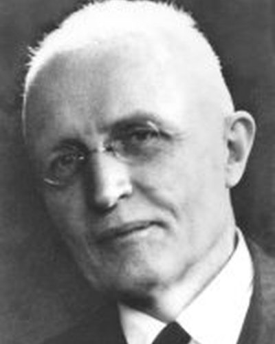

Ideologies / Liberal
What is Ordoliberalism?
Ordoliberalism is a political ideology in the Liberal family. It argues that free markets do not maintain themselves, because firms form cartels and monopolies. The state must set and enforce a firm framework of rules: stable money, open markets, liability and strict competition law. It should not steer the economy day to day. This is the basis of the German social market economy.
A strong state to keep markets competitive.
Defined from: Walter Eucken, Principles of Economic Policy (1952)
See how close you are to Ordoliberalism Dare a friend to answer as one


Where Ordoliberalism stands on 13 axes
Each axis runs from 0 to 100. A score of 50 is the middle. On a classic compass it sits in the Libertarian Right quadrant.
| Axis | Position | Score | In words |
|---|---|---|---|
| EconomyMarket to Planned | 30 | Strongly Market | |
| OwnershipPrivate to Collective | 15 | Very strongly Private | |
| RightsLiberty to Security | 35 | Leans Liberty | |
| GovernmentDemocracy to Autocracy | 20 | Strongly Democracy | |
| StructureDecentralised to Centralised | 55 | Balanced | |
| NationInternationalist to Nationalist | 40 | Leans Internationalist | |
| ImmigrationMulticulturalist to Assimilationist | 50 | Balanced | |
| ValuesProgressive to Traditional | 55 | Balanced | |
| TechnologyAccelerationist to Precautionary | 40 | Leans Accelerationist | |
| EnvironmentIndustrialist to Environmentalist | 35 | Leans Industrialist | |
| ReligionSecular to Religious | 50 | Balanced | |
| MilitaryPacifist to Militarist | 40 | Leans Pacifist | |
| TradeFree Trade to Protectionist | 15 | Very strongly Free Trade |
Ideologies closest to Ordoliberalism
- Liberal Internationalism91% alike
- Lockean Liberalism88% alike
- Georgism84% alike
- Montesquieuan Constitutionalism82% alike
- Oakeshottian Conservatism82% alike
Its opposite on this map is Juche, at 29%.
Parties near Ordoliberalism
Christian Democratic Union of 1949 (Germany) was the first party or movement to carry it, placed here from The Düsseldorf Guidelines (1949).
- Christian Democratic Union of 1949Germany. The Düsseldorf Guidelines (1949)90% alike
- Vente VenezuelaVenezuela. Venezuela Tierra de Gracia (2023)88% alike
- Swatantra PartyIndia. Statement of Principles of the Swatantra Party (1959)87% alike
- Christian Democratic UnionGermany. In Freiheit leben (2024)87% alike
Common questions
What is Ordoliberalism?
Ordoliberalism is a political ideology in the Liberal family. It argues that free markets do not maintain themselves, because firms form cartels and monopolies. The state must set and enforce a firm framework of rules: stable money, open markets, liability and strict competition law. It should not steer the economy day to day. This is the basis of the German social market economy.
What does Ordoliberalism believe?
In one line: A strong state to keep markets competitive. Its strongest positions are Private, Free Trade, Democracy. It argues that free markets do not maintain themselves, because firms form cartels and monopolies. The state must set and enforce a firm framework of rules: stable money, open markets, liability and strict competition law. It should not steer the economy day to day. This is the basis of the German social market economy.
Who founded Ordoliberalism?
Ordoliberalism is defined here from Principles of Economic Policy (1952) by Walter Eucken. The thinker most tied to it is Walter Eucken (1891 to 1950).
Is Ordoliberalism left wing or right wing?
On a classic two axis compass Ordoliberalism falls in the Libertarian Right quadrant, which means the economic right and the libertarian side. Left and right hide a lot, though, which is why EthosScales scores it on thirteen separate axes.
How is Ordoliberalism different from Liberal Internationalism?
They are close, at a 91% match. The biggest gaps are on Nation, where Ordoliberalism scores 40 and Liberal Internationalism scores 20, and Ownership, where Ordoliberalism scores 15 and Liberal Internationalism scores 25. On each axis, 0 is one end and 100 is the other.
Think this is wrong? Suggest a correction. The scores are editorial estimates.